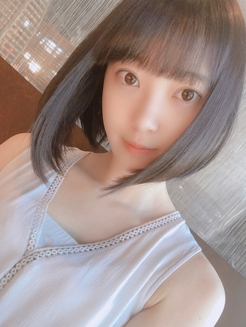

2018/0821Tue残してく。
突然ですが
プライベートの目標を発表します
それは...
いろんな温泉に行くこと！
お母さんや友達とたまに行くけどまだ未開拓な温泉地がたくさんあるから家族で行けたらいいな〜
おすすめの場所があったら教えて下さい！

お休みの日はメイクしない時とする時があって
(気分なのですが) この日はすっぴんdayでした
なんか、さっぱりしてる〜
この間自分でメイクをした日に松村さんに
まぶたキラキラだねー
撮影終わりかと思ったよーって言ってもらえて
嬉しかったな♡
アイシャドウは全体と二重幅の2色塗りがマイルールです！
近況
銀魂2を絢音とお仕事終わりに観てきました^^
始まってすぐからずっとお腹抱えて笑ってました...
本当に面白い！ムロツヨシさんと佐藤二郎さんは50回目のファーストキスに続き安定にドツボでした。苦しかったです、笑
ストーリーも涙ありで魅入りましたし
学生時代にアニメは少し観ていたのですが
全話制覇！では無かったので内容がちゃんと分かるか不安でした。でもわたしみたいに銀魂あまり詳しくない！という方でも100%楽しめますので
ぜひに。わたしはこれを機にアニメも最初からちゃんと観始めようと思いました...
橋本環奈さんはもちろんずっとかわいいけれど話し方、声が癒しすぎました
神宮ライブに来てくださっててトロッコから橋本環奈さんを見つけた時、えっっやはり凄くかわいいっってなったなぁ
あとは銀魂だとアニメの時から器用でさらっと頭のいい沖田総悟さんが気になっていたのですが(胸の内に秘めた熱意や根性が時たま男らしくてギャップです)
実写版映画でのあの電車のシーン...
破壊力が...すごくて。
吉沢亮さんの目のお芝居にも引き込まれました
殺意と決意が入り混ざっていて格好いいだけでは済まされず、わたしの語彙力が乏しくて申し訳ないです
絢音もすっごく楽しかったって言っていてね、
終わった後あーだこーだ焼肉を食べながら話しました。笑
映画 や 美術館 など
楽しみながら自分の身になるものや蓄えられるものを見つけられる趣味があることを嬉しく思います


9月のガールズアワードは
お仕事の都合で出られなくなりました。
今まで出させていただいていて毎回
楽しみにしていたので残念ですが...
わたしもお仕事、頑張ります。
そしてメンバーのランウェイを
携帯越しに見守っています。
そして...
乃木坂46
結成7周年 おめでとうございます
ありがとうございます 。笑
皆さんの温かく力強い支えがありきの私達です。
感謝の言葉だけでは伝えきれません
これからも乃木坂46の変化を成長を、一緒に楽しんでいただけたら嬉しいです
皆さんが大好き^^

では！
2018/08/21 18:48
コメント(850)
ブログありがとう！
みおな
じやぁ、温泉ソムリエ目指してみるのもありじゃない？
え？そこまでじゃないって？
じやぁ、温泉ソムリエ目指してみるのもありじゃない？
え？そこまでじゃないって？
まずは、乃木坂46の7歳の誕生日おめでとうございます！ファンに笑顔を届けてくれて、ファンにも沢山の最高の景色を見せてくれました。乃木坂46というグループに巡り会うことが出来て本当に感謝しています。これからも坂を駆け上っていくのをずっと見ています！ファンも一緒に連れて行ってください！
これからも乃木坂46というグループを愛し続けます☺️
銀魂私も見たいですー！予告を見てると、すごい面白そうだなーって思ってました
未央奈ちゃんのスッピン可愛すぎる
未央奈ちゃんの笑顔が大好き！
またねっ！
これからも乃木坂46というグループを愛し続けます☺️
銀魂私も見たいですー！予告を見てると、すごい面白そうだなーって思ってました
未央奈ちゃんのスッピン可愛すぎる
未央奈ちゃんの笑顔が大好き！
またねっ！
浜松市にある舘山寺温泉すごいおススメだよ！！うなぎ、ふぐ、浜松餃子など美味しいものたくさんあるよ！(^^)
ブログ更新ありがとう！！！
みおなー可愛い！
みおなの笑顔一番すき！
みおなー可愛い！
みおなの笑顔一番すき！
更新ありがとうございます！
まずは7周年おめでとうございます！
これからも、未央奈さんを応援してます！！
銀魂、僕も大好きです！
明日観に行く予定です！
まずは7周年おめでとうございます！
これからも、未央奈さんを応援してます！！
銀魂、僕も大好きです！
明日観に行く予定です！
忙しい中、ブログ更新してくれてありがとう(｡•ᴗ•｡)♡
今回のブログ、内容も写真も両方共にすごい好みのもので幸せでした…
銀魂、1を見ていなくて見に行くか迷ってたけど、未央奈が勧めてくれるなら見に行くよ！笑
サバイバル・ウェディングも吉沢亮さん出てて、おもしろいよ～
今回のブログ、内容も写真も両方共にすごい好みのもので幸せでした…
銀魂、1を見ていなくて見に行くか迷ってたけど、未央奈が勧めてくれるなら見に行くよ！笑
サバイバル・ウェディングも吉沢亮さん出てて、おもしろいよ～
写真見たらめちゃくちゃ元気でた！笑
有馬温泉おススメ❗️
伊香保温泉オススメだよ！
乃木坂7周年おめでとうーー
銀魂2おもしろそうだなー見に行こ！
銀魂2おもしろそうだなー見に行こ！
まずは乃木坂結成7年おめでとう！
この1年は、東京ドームライブ、レコ大受賞、3年連続紅白歌合戦出場、初の初週ミリオン、神宮と秩父宮によるシンクロライブやみおなの写真集「君らしさ」発売といろんなことがあった1年だったなと思います。
そしてプライベートの目標は温泉に行くことと綴ってましたが、おススメなのかどうかは自分でも分かんないけど、先週の火曜日に、僕が住んでる福島市に高湯温泉があるけども、そこにある「あったか湯」という露天風呂施設があるんだけど、10分から15分ぐらいだったものの気持ち良かったよ！
それと貸し切りの露天風呂もあるから、いつかみおなと一緒に露天風呂満喫したいなと思ってます。
勿論ヤラしい目で見ないからさ！
この1年は、東京ドームライブ、レコ大受賞、3年連続紅白歌合戦出場、初の初週ミリオン、神宮と秩父宮によるシンクロライブやみおなの写真集「君らしさ」発売といろんなことがあった1年だったなと思います。
そしてプライベートの目標は温泉に行くことと綴ってましたが、おススメなのかどうかは自分でも分かんないけど、先週の火曜日に、僕が住んでる福島市に高湯温泉があるけども、そこにある「あったか湯」という露天風呂施設があるんだけど、10分から15分ぐらいだったものの気持ち良かったよ！
それと貸し切りの露天風呂もあるから、いつかみおなと一緒に露天風呂満喫したいなと思ってます。
勿論ヤラしい目で見ないからさ！
みおちゃんかわいいな
山形のあつみ温泉オススメです！
やっぱり温泉行くなら
群馬県の草津でしょ！！
群馬県の草津でしょ！！
一番最初のおすすめの温泉は、群馬県の草津温泉がいいですよ
お疲れ様です。
銀魂はまさに笑いあり涙ありでキャラクターもカッコイイ！
すごくいいアニメだと思います。
ぜひ栃木県に来てください！
塩原温泉郷など温泉がたくさんあります！
今日で乃木坂46結成7周年ですね。
今までたくさんの握手会やライブに参加させていただいてきました。
テレビやラジオや雑誌もたくさん見てきました。
乃木坂のみんなにはいつも勇気と笑顔をもらってきました。
これからも乃木坂46、そして未央奈がますます坂を登っていけるように全力で応援しています！
未央奈を信じてついて行きます！
頑張ってください！
銀魂はまさに笑いあり涙ありでキャラクターもカッコイイ！
すごくいいアニメだと思います。
ぜひ栃木県に来てください！
塩原温泉郷など温泉がたくさんあります！
今日で乃木坂46結成7周年ですね。
今までたくさんの握手会やライブに参加させていただいてきました。
テレビやラジオや雑誌もたくさん見てきました。
乃木坂のみんなにはいつも勇気と笑顔をもらってきました。
これからも乃木坂46、そして未央奈がますます坂を登っていけるように全力で応援しています！
未央奈を信じてついて行きます！
頑張ってください！
明日観に行くよ～
未央奈ちゃん！こんばんは✨
乃木坂7周年おめでとうございます！
温泉といったら兵庫県の有馬温泉の金の湯が良かったです❤︎
ぜひ行ってみてください！
行けれないのですが今週末の名古屋ライブ頑張ってください！応援しています！そして、水曜日のレコメン！木曜日のshowroom楽しみです！
未央奈ちゃん大好きです
乃木坂7周年おめでとうございます！
温泉といったら兵庫県の有馬温泉の金の湯が良かったです❤︎
ぜひ行ってみてください！
行けれないのですが今週末の名古屋ライブ頑張ってください！応援しています！そして、水曜日のレコメン！木曜日のshowroom楽しみです！
未央奈ちゃん大好きです
お仕事お疲れ様です！
相変わらずめっちゃかわいいです！
自分的には定山渓温泉がオススメですよ！
銀魂面白くてお腹痛くなるくらい笑いました！
相変わらずめっちゃかわいいです！
自分的には定山渓温泉がオススメですよ！
銀魂面白くてお腹痛くなるくらい笑いました！
みおなブログ更新ありがとう。
温泉っていいよね！地元大分だから行くといいよ。いっぱいあるから。
別府の温泉は全部いいから行ってみて
楽しい思い出でなによりだね 楽しんで。
都合ならしょうがないよね。真剣に頑張って！
こちらこそありがとう！みおなたちのおかげだよ
みおなたちが頑張って来たからこそ僕たちがいる
本当にありがとう 自信持って！大好き
ちょっと気になったけどタイトル意味深
温泉っていいよね！地元大分だから行くといいよ。いっぱいあるから。
別府の温泉は全部いいから行ってみて
楽しい思い出でなによりだね 楽しんで。
都合ならしょうがないよね。真剣に頑張って！
こちらこそありがとう！みおなたちのおかげだよ
みおなたちが頑張って来たからこそ僕たちがいる
本当にありがとう 自信持って！大好き
ちょっと気になったけどタイトル意味深
やっぱ目が大きくて可愛い
自分も銀魂観に行ったよー最高に面白かった
自分も銀魂観に行ったよー最高に面白かった
温泉なら、静岡の赤沢温泉が隠れた名湯でオススメです！！！
草津良いとこ一度はおいで～
有馬温泉おすすめよ！！！
すき！
ブログ更新ありんこ！
おいでよ長野
おいでよ浅間温泉
おいでよ長野
おいでよ浅間温泉
かわいい！
目標達成できるように頑張ってくださいね！
目標達成できるように頑張ってくださいね！
石川県の和倉温泉はおすすめですよ！今日行ってきました！！
ブログ更新ありがとうございます！
自分の趣味を満喫できることは最高ですよね！
これからも楽しんでくださいね！
乃木坂46の結成7周年おめでとうございます！
いつも楽しさをありがとうございます！
これからもいつも応援しています！
自分の趣味を満喫できることは最高ですよね！
これからも楽しんでくださいね！
乃木坂46の結成7周年おめでとうございます！
いつも楽しさをありがとうございます！
これからもいつも応援しています！
のっけから、ほんとに突然なんで、ウケました。大笑。
銀魂、未央奈さんが、そんなに言うのら、観ねばいけませんね！
映画館に行くのは何ヶ月ぶりか。
映画談義中も焼肉。笑。
そして最後の未央奈さんで、また大笑い。
お後がよろしいようで。
栃木の那須いいですよ。
僕の地元です。
僕の地元です。
更新ありがとう
乃木坂46結成7周年おめでとう
そして、やっぱ未央奈かわいい❤
幕張全握いくから待っててね！
乃木坂46結成7周年おめでとう
そして、やっぱ未央奈かわいい❤
幕張全握いくから待っててね！
お疲れ様です！
ベタだけど箱根は外せない！
忙しくて大変だと思うけどしっかりリフレッシュしてな〜
ベタだけど箱根は外せない！
忙しくて大変だと思うけどしっかりリフレッシュしてな〜
いやいや、それですっぴんはアリエンロッベン。可愛すぎやろ
ブログ更新ありがとう︎☺︎
ガールズアワード残念だけど、またランウェイでキラキラ輝いてる未央奈ちゃんみるの楽しみにしてます︎。
乃木坂46結成7周年おめでとう！！！！
乃木坂46に出会えてファンになれてよかった。
これからもずっとずっと大好きです︎ ︎ ❤︎
ガールズアワード残念だけど、またランウェイでキラキラ輝いてる未央奈ちゃんみるの楽しみにしてます︎。
乃木坂46結成7周年おめでとう！！！！
乃木坂46に出会えてファンになれてよかった。
これからもずっとずっと大好きです︎ ︎ ❤︎
ブログ更新ありがとう！
未央奈ちゃんすっぴん可愛すぎぃ‼︎
今日も写真いっぱいで嬉しいな
お仕事頑張ってね！応援してるよー‼︎
未央奈ちゃんすっぴん可愛すぎぃ‼︎
今日も写真いっぱいで嬉しいな
お仕事頑張ってね！応援してるよー‼︎
道後温泉いいよ！愛媛だよ！来てね！
未央奈ちゃんかわいい〜！ずっと応援してます！！元気をありがとう
コメント失礼します！
みおな〜可愛いすぎる❤️
香川の仏生山温泉めちゃくちゃおすすめです！オシャレでいいです（＾ν＾）遠いですけど。笑
あと乃木坂7周年おめでとうございます笑
ブログ更新ありがとう
みおな〜可愛いすぎる❤️
香川の仏生山温泉めちゃくちゃおすすめです！オシャレでいいです（＾ν＾）遠いですけど。笑
あと乃木坂7周年おめでとうございます笑
ブログ更新ありがとう
愛媛の道後温泉はいいですよ。僕は地元が愛媛なのですが、半年前には飛鳥乃湯泉という温泉が新設されますます多くの人が道後温泉に足を運んでくれているみたいです。よかったらぜひ行ってみてください
未央奈、こんばんは〜。乃木坂46結成7周年おめでとう！まだ、ファンになって一年と少しだけど、乃木どこ、乃木中、NOGIBINGO、全部見てます。MV集も悲しみの忘れ方も観ました。勝手にずっとファンのつもりでいます。未央奈が加入してからもう５年も経ってるね。これからも乃木坂と未央奈の活躍を応援していきます。
えー⁈ この写真すっぴんなの？奇跡です。可愛いすぎる。
温泉、穴場ではないけど、愛媛松山の道後温泉は来たことありますか？飛鳥ちゃんはグラビアで来たことあります。最近、飛鳥乃湯泉というのができたんです。未央奈もぜひ、家族やメンバーと来てください。
鯛めしなどの美味しいお店を案内しますよー。なんちって。
えー⁈ この写真すっぴんなの？奇跡です。可愛いすぎる。
温泉、穴場ではないけど、愛媛松山の道後温泉は来たことありますか？飛鳥ちゃんはグラビアで来たことあります。最近、飛鳥乃湯泉というのができたんです。未央奈もぜひ、家族やメンバーと来てください。
鯛めしなどの美味しいお店を案内しますよー。なんちって。
結成7周年おめでとうございます㊗️
まだまだ乃木坂の飛躍を期待しています！
体調に気をつけてお仕事頑張ってください！！
応援しています！！
まだまだ乃木坂の飛躍を期待しています！
体調に気をつけてお仕事頑張ってください！！
応援しています！！
未央奈ちゃんブログ更新お疲れ様！♡
色々な温泉かあ。岐阜は多くの温泉地があるって有名だよね！！♡♡
すっぴんの破壊力やばい！えぐすぎ！すき！（笑）
銀魂2観たよ〜私も原作全部読めてなかったけど死ぬほど笑ったし死ぬほど泣いた！（笑）振り幅多すぎるよね〜（笑）
沖田さん推しなんだね♡私は土方さん推しです！！
だから新撰組追い出された時めちゃくちゃショックだったの、
でも最後は鬼の副長だったねー！！
ガルアワ出ると思ってたからびっくりしたけどお仕事ならしょうがないね〜また冬のランウェイ待ってます！♡
7年おめでとう。私にとってはこれから4年目。お願いします。
色々な温泉かあ。岐阜は多くの温泉地があるって有名だよね！！♡♡
すっぴんの破壊力やばい！えぐすぎ！すき！（笑）
銀魂2観たよ〜私も原作全部読めてなかったけど死ぬほど笑ったし死ぬほど泣いた！（笑）振り幅多すぎるよね〜（笑）
沖田さん推しなんだね♡私は土方さん推しです！！
だから新撰組追い出された時めちゃくちゃショックだったの、
でも最後は鬼の副長だったねー！！
ガルアワ出ると思ってたからびっくりしたけどお仕事ならしょうがないね〜また冬のランウェイ待ってます！♡
7年おめでとう。私にとってはこれから4年目。お願いします。
兵庫県民なので城崎温泉と有馬温泉をオススメします！
縄文にハマった笑顔…守りたい、その笑顔。
北海道の登別温泉がオススメです！
未央奈ブログ更新ありがとう！
温泉かー！
福島県しか分からないけど、飯坂温泉とか東山温泉とかオススメかな？冬場に来ると綺麗な雪見ながら温泉入れたりするとこもあるから東北の温泉はいいよ〜（笑）
銀魂好きだから俺も早く見にいきたーい！
温泉かー！
福島県しか分からないけど、飯坂温泉とか東山温泉とかオススメかな？冬場に来ると綺麗な雪見ながら温泉入れたりするとこもあるから東北の温泉はいいよ〜（笑）
銀魂好きだから俺も早く見にいきたーい！
未央奈ちゃん！大好きです！！！
応援してます！一緒にホラー映画みたいです！！！受験勉強頑張ります！！！
応援してます！一緒にホラー映画みたいです！！！受験勉強頑張ります！！！


ブログ更新ありがとー！
銀魂おもしろそうだな、見に行こうかな
未央奈は縄文にハマる人々なのね笑
7周年！これからも頑張ってね！！